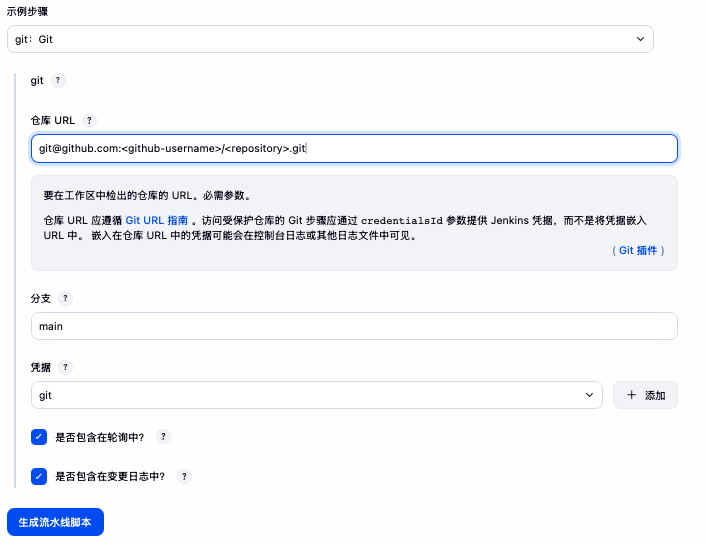

目录
Jenkins 创建第一个流水线
环境
- 代码在 GitHub 私有仓库上
步骤
新建一个流水线
- 在 Jenkins 首页点击 “新建任务”。
- 输入任务名称，选择 “流水线”，点击 “确定”。
- 在流水线配置页面，找到 “流水线” 部分。
- 在 “定义” 下拉框中选择 “Pipeline script”。
- 脚本输入框下面有个 “流水线语法”，可以生成脚本，点击 “流水线语法” 链接。
- 在 “流水线语法” 页面中，选择 “示例步骤” 下拉框，选择一个步骤 “git：Git”。
- 仓库 URL 输入框中输入 GitHub 仓库地址，例如
git@github.com:<github-username>/<repository>.git - 分支输入框中输入代码库中分支名称。
- 因为是私有仓库，所以需要添加凭据，点击 “添加” 按钮，选择 “全局凭证（无限制）”，选择 “SSH Username with private key”，范围选择 全局，输入凭据名称（ID栏），描述的话，如果有同名的可以写描述，用户名输入 git，选择 “Enter directly（直接输入）”，将生成的 SSH 私钥内容粘贴到文本框中，点击 “添加”。
- 在当前这种“使用语法生成器”的场景下 “Secret file” 或者 “Secret text”，这两种类型的凭据在选择凭据的时候不会显示。
- 密钥生成可以使用
ssh-keygen -t rsa -b 4096 -f ~/.ssh/id_rsa -C "your_email@example.com"- 生成的公钥内容可以使用
cat ~/.ssh/id_rsa.pub查看并复制到 GitHub 的对应代码仓库的设置中的 Deploy keys（部署密钥）中。(注意：Deploy key 通常用于单个仓库的访问；如果需要让 Jenkins 访问多个私有仓库，则要考虑统一的机器用户或其他认证方式。) - 生成的私钥内容可以使用
cat ~/.ssh/id_rsa查看并复制到凭据中。 - SSH 密钥可以在任意 Linux/macOS 终端生成；关键是要把对应的公钥添加到 GitHub 仓库的 Deploy keys 中，并把匹配的私钥添加到 Jenkins 凭据中。而且要注意保密之类的事项。
- 生成的公钥内容可以使用
- 选择刚才添加的凭据，点击 “生成流水线脚本”，得到类似如下的脚本：
git branch: 'main', credentialsId: '<凭据ID>', url: 'git@github.com:<github-username>/<repository>.git'
- 将生成的脚本复制到流水线脚本输入框中，再写一些脚本，我的目的是让 Jenkins 执行 列出二层目录 命令，所以脚本如下：
pipeline {
agent any
stages {
stage('Checkout Code') {
steps {
git branch: 'main',
credentialsId: "<凭据ID>",
url: 'git@github.com:<github-username>/<repository>.git'
}
}
stage('Show Directory Tree') {
steps {
sh '''
echo "当前工作目录: $(pwd)"
echo "列出前两层目录结构："
if command -v tree >/dev/null 2>&1; then
tree -L 2
else
echo "tree 命令不存在，尝试安装或使用 find 替代"
find . -maxdepth 2 | sort
fi
'''
}
}
}
post {
success {
echo '流水线执行成功'
}
failure {
echo '流水线执行失败'
}
always {
cleanWs()
}
}
}cleanWs() 需要安装 Workspace Cleanup 插件；如果未安装，可先删除这一段。
- 点击 “保存” 后运行就可以了
注意事项
- 关于 Jenkins 主机密钥验证（Host key verification）的问题
创建成功后运行的时候，可能会遇到如下错误：
Host key verification failed这个错误说明 Jenkins 当前环境还没有接受 GitHub 的主机密钥。
解决方法：
- 这个问题有多种解决办法，下面说一种图形化的方式：
- 在 Jenkins 的系统管理中找到 “全局安装配置”，点开后找到 “Git Host Key Verification Strategy”。
- 可以选择 “Accept first connection（接受首次连接）”，这样 Jenkins 在第一次连接 GitHub 时会自动接受主机密钥。